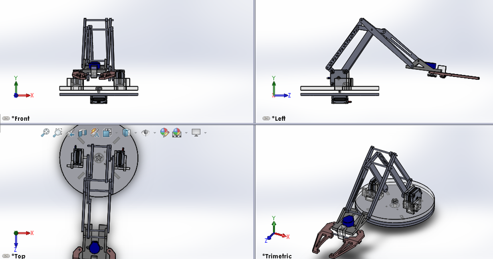
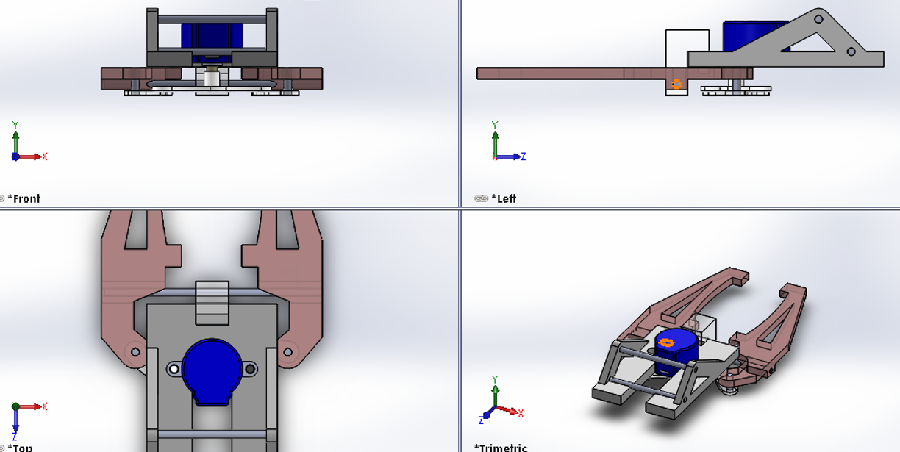
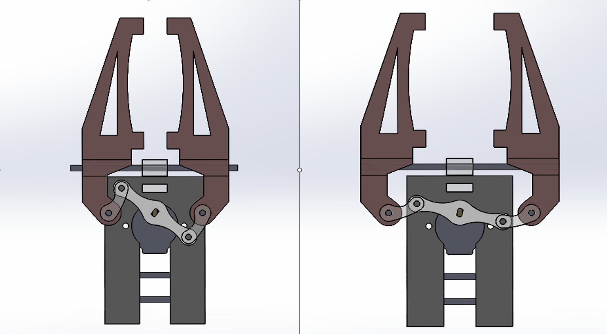
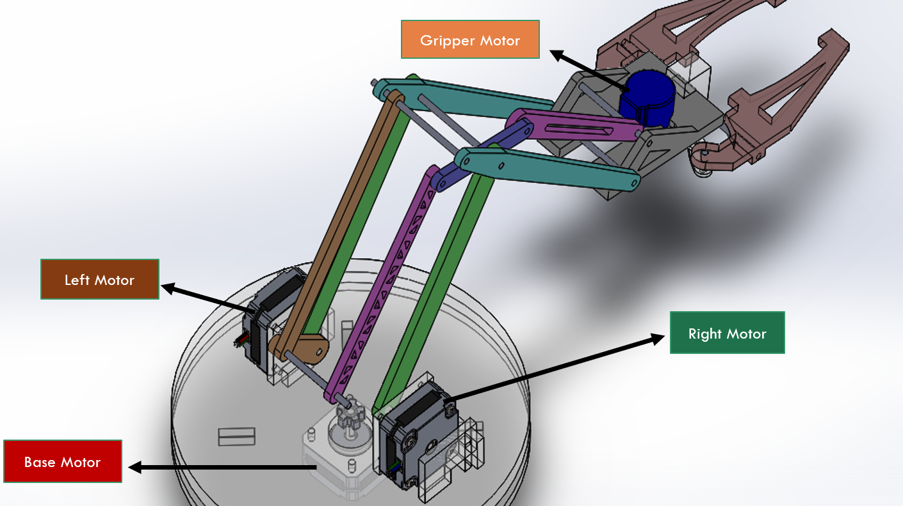
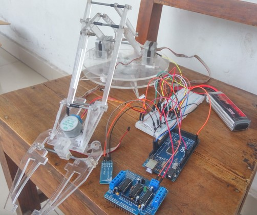
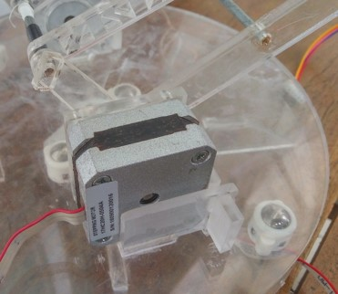

This project presents the design and development of an Android-controlled robotic arm intended to replicate the basic movements of a human arm through programmable mechanical and electronic systems. The work integrates mechanical structure design with embedded systems, combining stepper motors, motor drivers, an Arduino Mega controller, and a Bluetooth module to enable wireless communication with an Android application. The robotic arm is designed with multiple degrees of freedom, including base rotation, arm movement, and a gripper mechanism, allowing it to perform basic manipulation tasks. The methodology involves conceptual design, material selection, structural fabrication using acrylic components, and assembly of electronic circuits for motor control. The system architecture focuses on coordinating multiple motors to achieve controlled motion, while the Android interface is intended to provide user-friendly remote operation. Throughout the project, key engineering challenges such as load distribution, motor torque limitations, circuit stability, and fabrication constraints are addressed. Although the physical structure and electronic integration were successfully implemented, full system functionality particularly precise gripping and complete Android-based control was limited due to hardware and control constraints. The project demonstrates the practical complexities of robotics development and provides a foundation for future improvements in actuation, control systems, and structural design.
None
The methodology of this project follows a systematic design–build–test approach. The process begins with the conceptual design of the robotic arm, where the overall structure, degrees of freedom, and motion requirements are defined. Based on this, a detailed mechanical design is developed using 2D layouts, and suitable materials such as acrylic sheets and aluminium components are selected to construct the arm structure. The next stage involves component selection and system integration. Stepper motors are chosen for joint actuation, along with motor drivers, an Arduino Mega microcontroller, and an HC-05 Bluetooth module for wireless communication. A circuit is designed and implemented to control multiple motors, ensuring coordinated movement of the base, arm segments, and gripper. The electronic components are assembled on a breadboard and later integrated into the full system. Following hardware assembly, programming and control development are carried out. The Arduino is programmed to drive the motors and execute movement commands, while initial efforts are made to establish communication between the robotic arm and an Android application via Bluetooth. Individual motor testing is performed first, followed by attempts to synchronize multi-axis motion. Finally, the system is tested and evaluated. The structure, motor performance, and control functionality are assessed to determine whether project objectives are met. Observations from testing are used to identify limitations related to torque, control accuracy, and system stability, forming the basis for further improvements.





